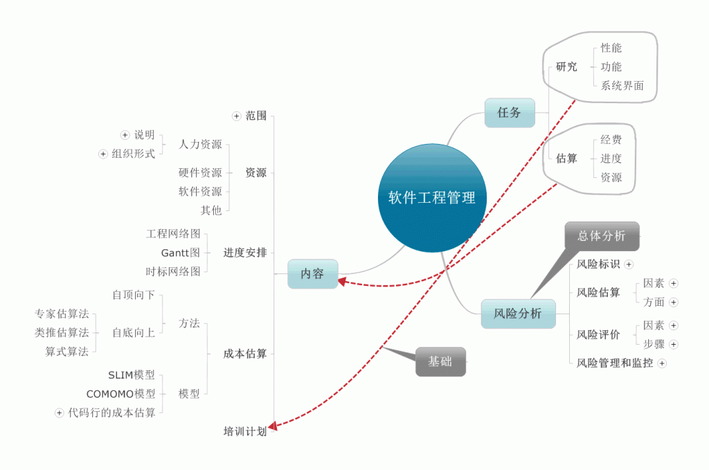
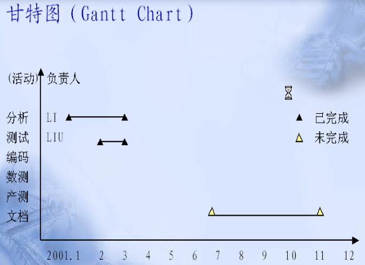
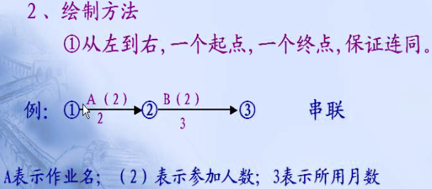
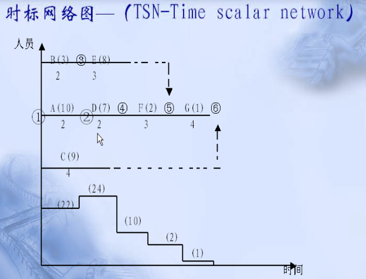
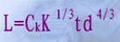
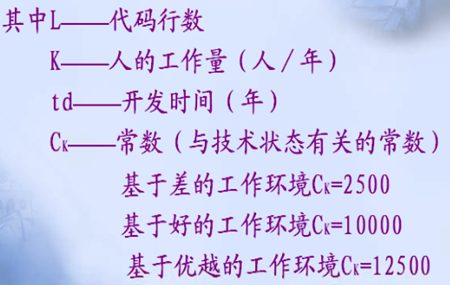
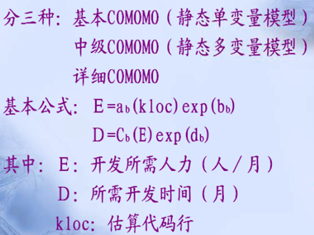
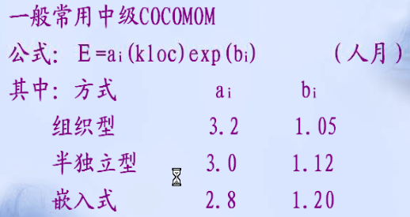
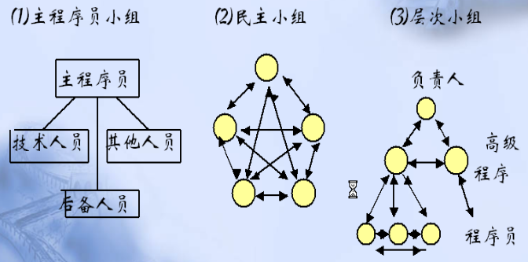

项目工程管理是以项目管理为主线，强调了工程管理项目建设，由于工程项目是一次性的，所以工程项目管理是为使项目实现所要求的质量，所规定的时限，所批准的费用预算所进行的全过程，全方位的规划，组织，监督，控制与协调。
如下是我对项目工程管理的大概理解：

上图就是整体的框架，下面来具体介绍一下软件项目管理的重要细节。
进度安排：
常用的3种方式：甘特图，工程网络图，时标网络图
甘特图：用以描述把任务分解成子任务，以及每个子任务的进度安排如一个水平“直方图”。

工程网络图：也称计划评审技术，是一种有向图，起点是箭尾，表示任务开始，终点是箭头，表示任务的结束。箭上的数据称为权，表示子任务的持续时间。
路线：从总起点到总终点的通路。
关键路线：可能的路线中周期最长的路线。
工程周期：花费在关键路线上的时间。
最早开工时刻：一个作业可能发生的最早时间。
最迟开工时刻：在不影响工程终结的情况下，该作业最晚可以发生的时刻。

时标网络图:综合以上两种的优缺点，时标网络图的时序管理清晰，每阶段中资源利用状况也很清楚。

成本估算：
成本估算模型：
1， SLIM模型——是个动态变量模型


2，COMOMO模型


人力资源：
组织形式：

1，主程序员小组
2，民主小组
3，层次小组